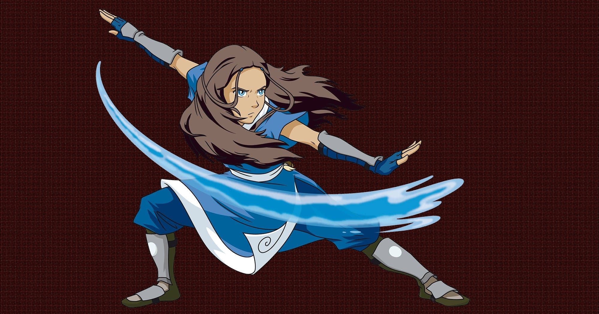

El Príncipe Zuko es un Maestro Fuego y un príncipe de la Nación del Fuego que había sido exiliado antes del comienzo de la serie.
Él estaba empeñado en la captura de Aang, el Avatar para restaurar su honor y su derecho al trono, pero a medida que avanza la serie comprende que la guerra de la Nación del Fuego ha hecho mucho daño con el paso de los años y por eso es que alcanza a recapacitar a tiempo.
Las marcas distintivas de Zuko son una gran cicatriz que parte desde su ojo izquierdo hasta su oreja. Anteriormente, su peinado fue la cabeza rapada con una cola de caballo, pero al pasar del tiempo se deja crecer el cabello con mayor tesón. Cuando Zuko llora por algo que lo haga sufrir, el ojo de la cicatriz no arroja ninguna lágrima, sin embargo, a partir del momento en el cual se entera de la verdad acerca de la traición en la familia, vuelve a llorar el ojo izquierdo junto con el derecho. No obstante, Zuko logra conservar la capacidad de ver con ambos ojos.
 |
Aang |
Soka |
Toph |
Katara |